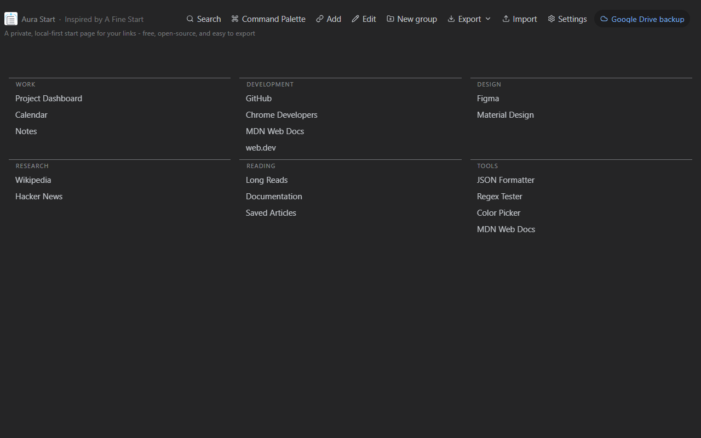
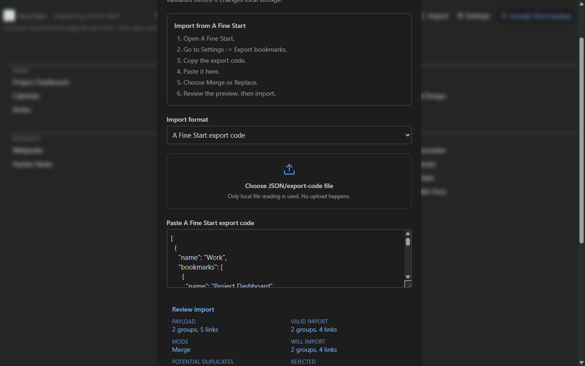
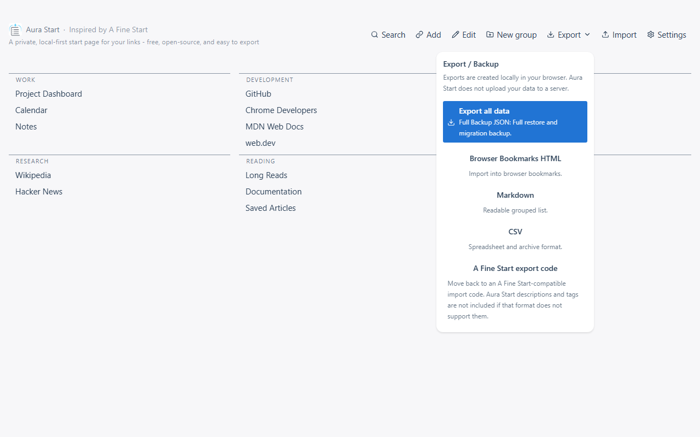
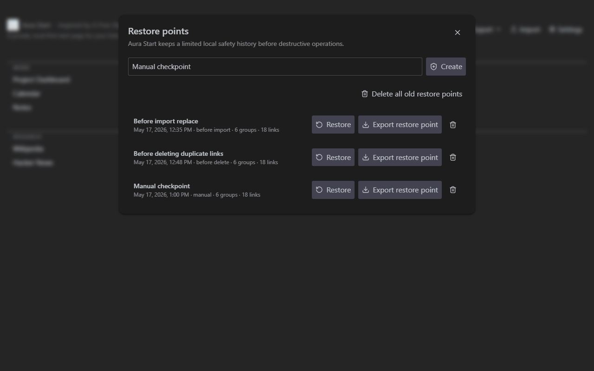
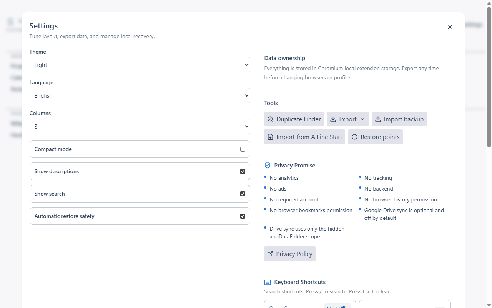
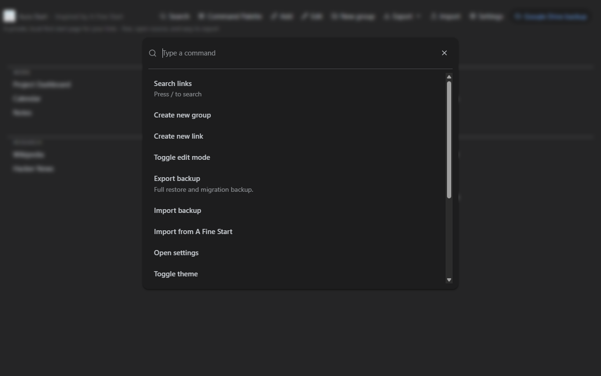
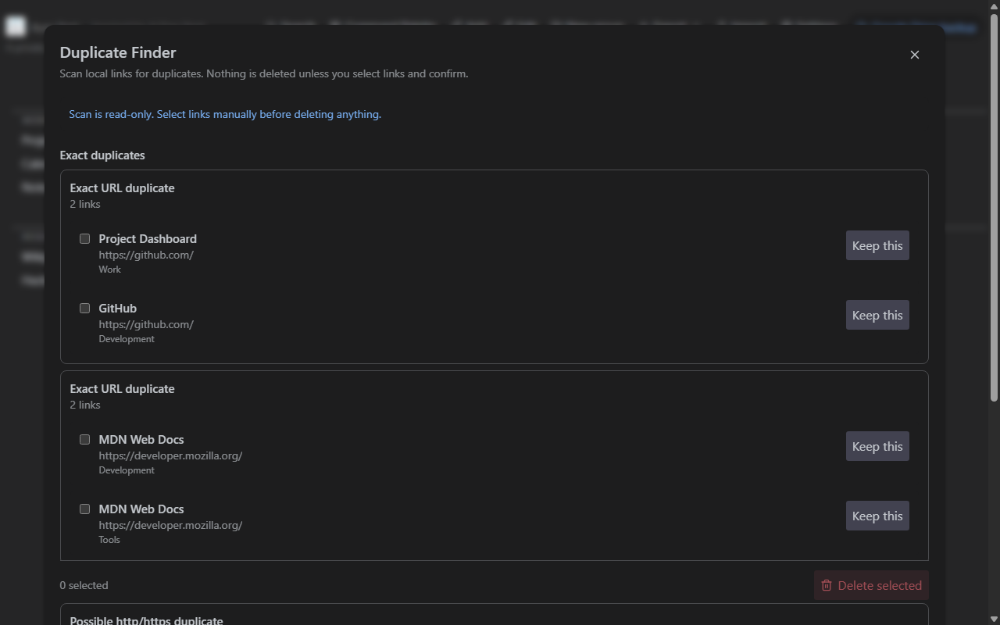
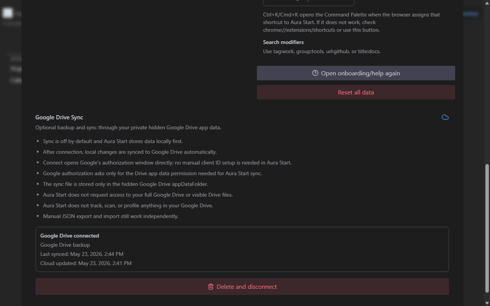

New tab
Main New Tab
Clean groups of links on the real Aura Start new tab page.
A closer look at the local-first new tab, export tools, restore points, Command Palette, Duplicate Finder, and privacy-first workflow.
These images are captured from the current Aura Start 1.2.0 extension UI with non-personal demo data. They are not drawn mockups.

Clean groups of links on the real Aura Start new tab page.

The real import flow with A Fine Start format selected and preview validation visible.

The real Export menu with JSON, HTML bookmarks, Markdown, CSV, and A Fine Start-compatible export options.

The real Restore Points Manager showing local safety snapshots before destructive changes.

The real Settings screen with no-account, no-analytics, no-tracking privacy promises.

The real Ctrl+K Command Palette over the Aura Start page.

The real Duplicate Finder showing read-only duplicate groups and user-controlled deletion.

The real Google Drive sync settings showing optional appDataFolder backup.